Moderated Regression: Categorical Moderators
Shu Fai Cheung & Sing-Hang Cheung
2026-08-27
Source:vignettes/articles/mo_lm_cat_2w.Rmd
mo_lm_cat_2w.RmdIntroduction
This article is part of a series of brief illustrations of how to use
cond_effects() from the package manymome (Cheung & Cheung, 2024) to estimate the
conditional effects when the model parameters are estimated by ordinary
least squares (OLS) multiple regression using lm(). For
moderated mediation tested by OLS regression, please refer to this article.
(Articles in this series had duplicated sections to make each of them self-contained.)
Data Set and Model
This is the sample data set used for illustration:
library(manymome)
dat <- data_mod_cat_2w
print(head(dat), digits = 3)
#> x y c1 c2 gp site
#> 1 19.8 24.5 29.5 10.2 Control Site 1
#> 2 24.0 21.6 15.3 10.3 Control Site 1
#> 3 28.4 24.7 29.4 20.4 Control Site 1
#> 4 39.7 26.9 32.4 16.7 Control Site 1
#> 5 33.4 21.1 36.5 10.2 Control Site 1
#> 6 22.7 23.8 27.9 23.5 Control Site 1This dataset has 6 variables:
one outcome variable (
y),one predictor (
x),two categorical moderators (
gp,site),two control variables (
c1andc2).
The moderator gp has two possible values:
"Control" and "Treatment".
The moderator site has three possible values:
"Site 1", "Site 2", and
"Site 3".
We will first consider two models, each with only one of the two moderators.
One Categorical Moderator: Two Categories
Suppose this is the model being fitted, with control variables omitted from the plot for readability:
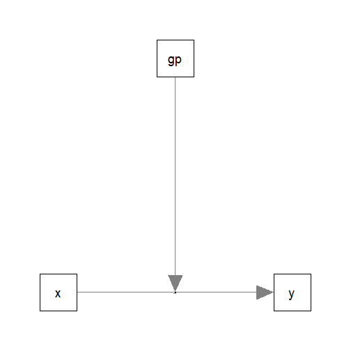
Fit by Regression
The path parameters can be estimated by multiple regression using
lm():
lm_y_gp <- lm(
y ~ gp*x + c1 + c2,
data = dat
)These are the estimates of the regression coefficients of the paths:
summary(lm_y_gp)
#>
#> Call:
#> lm(formula = y ~ gp * x + c1 + c2, data = dat)
#>
#> Residuals:
#> Min 1Q Median 3Q Max
#> -10.8400 -2.6594 -0.2263 2.6201 15.5956
#>
#> Coefficients:
#> Estimate Std. Error t value Pr(>|t|)
#> (Intercept) 20.26140 1.49550 13.548 < 2e-16 ***
#> gpTreatment -4.96460 1.09316 -4.542 6.77e-06 ***
#> x -0.02738 0.03674 -0.745 0.456
#> c1 -0.02833 0.03843 -0.737 0.461
#> c2 0.39637 0.04438 8.932 < 2e-16 ***
#> gpTreatment:x 0.34746 0.04953 7.015 6.31e-12 ***
#> ---
#> Signif. codes: 0 '***' 0.001 '**' 0.01 '*' 0.05 '.' 0.1 ' ' 1
#>
#> Residual standard error: 4.093 on 594 degrees of freedom
#> Multiple R-squared: 0.2698, Adjusted R-squared: 0.2636
#> F-statistic: 43.89 on 5 and 594 DF, p-value: < 2.2e-16Conditional Effects
We can now use cond_effects() to estimate the effects of
x on y for different categories of the
moderator gp.
(Refer to vignette("manymome") and the help page of
cond_effects() on the arguments.)
out_gp <- cond_effects(
wlevels = "gp",
x = "x",
y = "y",
fit = lm_y_gp
)
out_gp
#>
#> == Conditional effects ==
#>
#> Path: x -> y
#> Conditional on moderator(s): gp
#> Moderator(s) represented by: gpTreatment
#>
#> [gp] (gpTreatment) ind SE Stat pvalue Sig CI.lo CI.hi
#> 1 Control 0 -0.027 0.037 -0.745 0.456 -0.100 0.045
#> 2 Treatment 1 0.320 0.033 9.655 0.000 *** 0.255 0.385
#>
#> - [SE] are regression standard errors.
#> - [Stat] are the t statistics used to test the effects.
#> - [pvalue] are p-values computed from 'Stat'.
#> - [Sig]: 0 '***' 0.001 '**' 0.01 '*' 0.05 ' ' 1.
#> - [CI.lo to CI.hi] are 95.0% confidence interval computed from regression standard errors.
#> - The 'ind' column shows the conditional effects.
#> The column ind shows the effects of x on
y for different categories of gp.
In the group "Control", the effect of x is
-0.027, with a 95% confidence interval [-0.100, 0.045].
In the group "Treatment", the effect of x
is 0.320, with a 95% confidence interval [0.255, 0.385].
NOTE: The standard error (SE) and related results are
computed using the pick-a-point approach by Rogosa (1980).
Plotting the Conditional Effects
The output of cond_effects() has a plot
method for plotting the conditional effects:
plot(out_gp)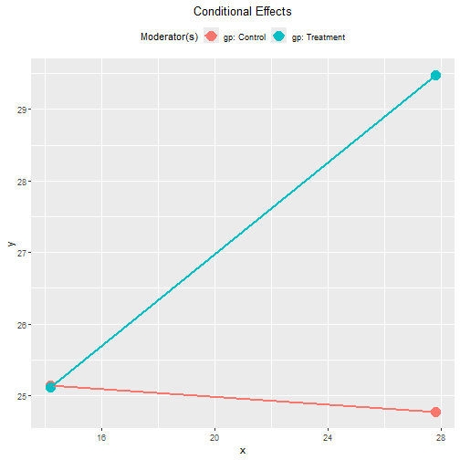
By default, the lines span the range of one standard deviation below and above the mean of the predictor.
The plot can be customized in a lot of ways. Please refer to the help
page of plot.cond_indirect_effects() for available
options.
Tumble Plot
If the distribution of the x variable may vary for
different levels of the moderators, a version of tumble graph
proposed by Bodner (2016) can be plotted
by adding graph_type = "tumble":
plot(out_gp,
graph_type = "tumble")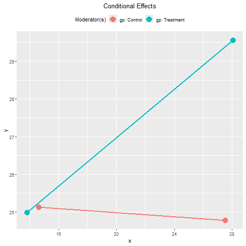
In this example, the distributions of x for the groups
are similar.
Standardized Conditional Effects
Although OLS can be used to estimate and test the unstandardized effects, it is inappropriate for forming the confidence intervals for the standardized effects. See Yuan & Chan (2011) on the issue of standardized regression coefficients.
To form nonparametric bootstrap confidence intervals for effects to
be computed, add boot_ci = TRUE, R to the
number of bootstrap samples (should be 5000 or even 10000, for multiple
regression), and seed (set it to an integer to ensure the
results are reproducible).
The standardized conditional effects from x to
y conditional on gp can be estimated by
setting standardized_x and standardized_y to
TRUE.
This is the output:
std_gp <- cond_effects(
wlevels = "gp",
x = "x",
y = "y",
fit = lm_y_gp,
boot_ci = TRUE,
R = 5000,
seed = 54532,
standardized_x = TRUE,
standardized_y = TRUE
)
#> 19 processes started to run bootstrapping.
std_gp
#>
#> == Conditional effects ==
#>
#> Path: x -> y
#> Conditional on moderator(s): gp
#> Moderator(s) represented by: gpTreatment
#>
#> [gp] (gpTreatment) std CI.lo CI.hi Sig ind
#> 1 Control 0 -0.039 -0.130 0.048 -0.027
#> 2 Treatment 1 0.457 0.363 0.551 Sig 0.320
#>
#> - [CI.lo to CI.hi] are 95.0% percentile confidence intervals by nonparametric bootstrapping with 5000
#> samples.
#> - std: The standardized conditional effects.
#> - ind: The unstandardized conditional effects.
#> In the group "Control", the standardized effect of
x is -0.039, with a 95% confidence interval [-0.130,
0.048].
In the group "Treatment", the standardized effect of
x is 0.457, with a 95% confidence interval [0.363,
0.551].
Plot Standardized Conditional Effects
The plot() method can also be used on the standardized
conditional effects, although the only differences are the values
displayed on the axes:
plot(std_gp)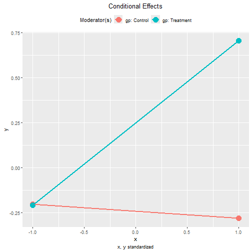
plot(std_gp,
graph_type = "tumble")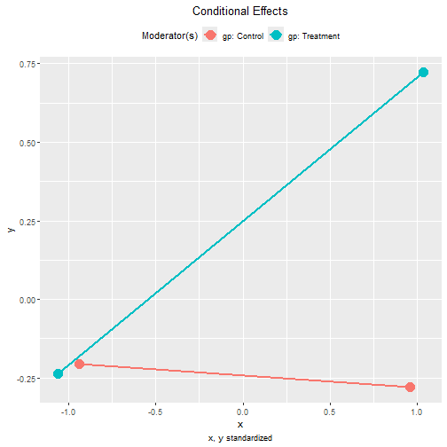
One Categorical Moderator: Three Categories
The steps demonstrated above can be used for a categorical moderator with any number of levels.
Suppose this is the model being fitted, with control variables omitted from the plot for readability:
Fit by Regression
The path parameters can be estimated by a multiple regression model:
lm_y_site <- lm(
y ~ site*x + c1 + c2,
data = dat
)These are the estimates of the regression coefficients of the paths:
summary(lm_y_site)
#>
#> Call:
#> lm(formula = y ~ site * x + c1 + c2, data = dat)
#>
#> Residuals:
#> Min 1Q Median 3Q Max
#> -12.2398 -3.0852 0.2666 2.7867 17.3110
#>
#> Coefficients:
#> Estimate Std. Error t value Pr(>|t|)
#> (Intercept) 19.01557 1.99047 9.553 < 2e-16 ***
#> siteSite 2 -6.89570 2.15974 -3.193 0.001484 **
#> siteSite 3 1.30350 1.76713 0.738 0.461027
#> x 0.10205 0.05877 1.737 0.082989 .
#> c1 -0.03133 0.04062 -0.771 0.440934
#> c2 0.35831 0.04681 7.655 7.91e-14 ***
#> siteSite 2:x 0.32975 0.08710 3.786 0.000169 ***
#> siteSite 3:x -0.08913 0.08673 -1.028 0.304478
#> ---
#> Signif. codes: 0 '***' 0.001 '**' 0.01 '*' 0.05 '.' 0.1 ' ' 1
#>
#> Residual standard error: 4.317 on 592 degrees of freedom
#> Multiple R-squared: 0.1905, Adjusted R-squared: 0.1809
#> F-statistic: 19.9 on 7 and 592 DF, p-value: < 2.2e-16Conditional Effects
The function cond_effects() will determine the number of
categories automatically:
out_site <- cond_effects(
wlevels = "site",
x = "x",
y = "y",
fit = lm_y_site
)
out_site
#>
#> == Conditional effects ==
#>
#> Path: x -> y
#> Conditional on moderator(s): site
#> Moderator(s) represented by: siteSite 2, siteSite 3
#>
#> [site] (siteSite 2) (siteSite 3) ind SE Stat pvalue Sig CI.lo CI.hi
#> 1 Site 1 0 0 0.102 0.059 1.737 0.083 -0.013 0.217
#> 2 Site 2 1 0 0.432 0.064 6.715 0.000 *** 0.306 0.558
#> 3 Site 3 0 1 0.013 0.064 0.203 0.840 -0.112 0.138
#>
#> - [SE] are regression standard errors.
#> - [Stat] are the t statistics used to test the effects.
#> - [pvalue] are p-values computed from 'Stat'.
#> - [Sig]: 0 '***' 0.001 '**' 0.01 '*' 0.05 ' ' 1.
#> - [CI.lo to CI.hi] are 95.0% confidence interval computed from regression standard errors.
#> - The 'ind' column shows the conditional effects.
#> In the site "Site 1", the effect of x is
0.102, with a 95% confidence interval [-0.013, 0.217].
In the site "Site 2", the effect of x is
0.432, with a 95% confidence interval [0.306, 0.558].
In the site "Site 3", the effect of x is
0.013, with a 95% confidence interval [-0.112, 0.138].
Plotting the Conditional Effects
These are the plots of the conditional effects:
plot(out_site)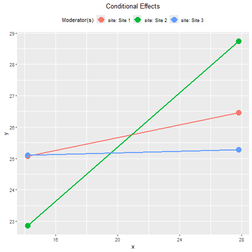
plot(out_site,
graph_type = "tumble")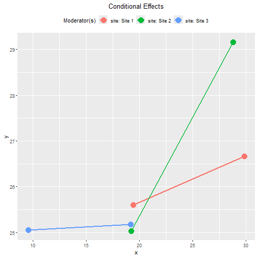
This example demonstrates the advantage of the tumble graph. The
distribution of x in "Site 3" has a mean lower
than those in the other two sites. The conventional plot using the same
range of x in all three groups will give the incorrect
impression of a cross-over of the lines in the samples (though
it is possible that such a cross-over of the lines happens in the
populations).
Standardized Conditional Effects
This is the output of the standardized conditional effects, with bootstrap confidence intervals:
std_site <- cond_effects(
wlevels = "site",
x = "x",
y = "y",
fit = lm_y_site,
boot_ci = TRUE,
R = 5000,
seed = 54532,
standardized_x = TRUE,
standardized_y = TRUE
)
#> 19 processes started to run bootstrapping.
std_site
#>
#> == Conditional effects ==
#>
#> Path: x -> y
#> Conditional on moderator(s): site
#> Moderator(s) represented by: siteSite 2, siteSite 3
#>
#> [site] (siteSite 2) (siteSite 3) std CI.lo CI.hi Sig ind
#> 1 Site 1 0 0 0.146 -0.023 0.317 0.102
#> 2 Site 2 1 0 0.616 0.414 0.818 Sig 0.432
#> 3 Site 3 0 1 0.018 -0.157 0.201 0.013
#>
#> - [CI.lo to CI.hi] are 95.0% percentile confidence intervals by nonparametric bootstrapping with 5000
#> samples.
#> - std: The standardized conditional effects.
#> - ind: The unstandardized conditional effects.
#> Two Categorical Moderators
The steps demonstrated above can be used in a regression model with any number of moderators.
Suppose this is the model being fitted, with control variables
omitted from the plot for readability, both gp and
site included, but no interaction between them:
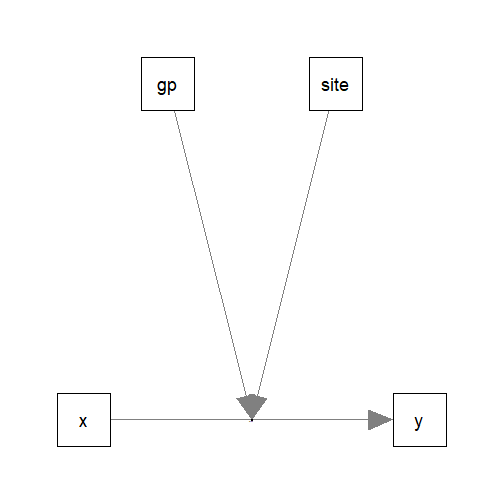
Fit by Regression
We first fit the regression model as usual:
lm_y_gp_site <- lm(
y ~ gp*x + site*x + c1 + c2,
data = dat
)These are the estimates of the regression coefficients of the paths:
summary(lm_y_gp_site)
#>
#> Call:
#> lm(formula = y ~ gp * x + site * x + c1 + c2, data = dat)
#>
#> Residuals:
#> Min 1Q Median 3Q Max
#> -11.4604 -2.5856 -0.0874 2.5927 14.1720
#>
#> Coefficients:
#> Estimate Std. Error t value Pr(>|t|)
#> (Intercept) 21.09442 1.89659 11.122 < 2e-16 ***
#> gpTreatment -5.24348 1.07451 -4.880 1.37e-06 ***
#> x -0.08388 0.05955 -1.409 0.159472
#> siteSite 2 -6.51680 2.00106 -3.257 0.001192 **
#> siteSite 3 1.39984 1.64547 0.851 0.395268
#> c1 -0.01832 0.03766 -0.486 0.626860
#> c2 0.38081 0.04345 8.764 < 2e-16 ***
#> gpTreatment:x 0.35510 0.04857 7.312 8.64e-13 ***
#> x:siteSite 2 0.31277 0.08070 3.876 0.000118 ***
#> x:siteSite 3 -0.08921 0.08091 -1.103 0.270626
#> ---
#> Signif. codes: 0 '***' 0.001 '**' 0.01 '*' 0.05 '.' 0.1 ' ' 1
#>
#> Residual standard error: 3.999 on 590 degrees of freedom
#> Multiple R-squared: 0.3077, Adjusted R-squared: 0.2971
#> F-statistic: 29.13 on 9 and 590 DF, p-value: < 2.2e-16Conditional Effects
The function cond_effects() can be used for any number
of moderators, as long as they are listed in wlevels:
out_gp_site <- cond_effects(
wlevels = c("gp", "site"),
x = "x",
y = "y",
fit = lm_y_gp_site
)
out_gp_site
#>
#> == Conditional effects ==
#>
#> Path: x -> y
#> Conditional on moderator(s): gp, site
#> Moderator(s) represented by: gpTreatment, siteSite 2, siteSite 3
#>
#> [gp] [site] (gpTreatment) (siteSite 2) (siteSite 3) ind SE Stat pvalue Sig CI.lo CI.hi
#> 1 Control Site 1 0 0 0 -0.084 0.060 -1.409 0.159 -0.201 0.033
#> 2 Control Site 2 0 1 0 0.229 0.065 3.527 0.000 *** 0.101 0.356
#> 3 Control Site 3 0 0 1 -0.173 0.067 -2.592 0.010 ** -0.304 -0.042
#> 4 Treatment Site 1 1 0 0 0.271 0.060 4.543 0.000 *** 0.154 0.388
#> 5 Treatment Site 2 1 1 0 0.584 0.064 9.146 0.000 *** 0.459 0.709
#> 6 Treatment Site 3 1 0 1 0.182 0.062 2.936 0.003 ** 0.060 0.304
#>
#> - [SE] are regression standard errors.
#> - [Stat] are the t statistics used to test the effects.
#> - [pvalue] are p-values computed from 'Stat'.
#> - [Sig]: 0 '***' 0.001 '**' 0.01 '*' 0.05 ' ' 1.
#> - [CI.lo to CI.hi] are 95.0% confidence interval computed from regression standard errors.
#> - The 'ind' column shows the conditional effects.
#> IMPORTANT: Even though this model does not have a three-way
interaction, the conditional effects still need to consider
both moderators. This is because the effect of x
depends on all moderators, whether there is higher-order
interaction or not.
If one or more moderators are omitted, a warning message will be issued. This is an example:
cond_effects(
wlevels = "gp",
x = "x",
y = "y",
fit = lm_y_gp_site
)
#> Warning in (function (xi, yi, yiname, digits = 3, y, wvalues = NULL, warn = TRUE, : siteSite 2, siteSite 3 modelled as
#> moderator(s) for the path from y~x to y but not included in 'wvalues'. They will be set to zero in computing the
#> conditional effect, which may not be meaningful. Please check.
#> Warning in (function (xi, yi, yiname, digits = 3, y, wvalues = NULL, warn = TRUE, : siteSite 2, siteSite 3 modelled as
#> moderator(s) for the path from y~x to y but not included in 'wvalues'. They will be set to zero in computing the
#> conditional effect, which may not be meaningful. Please check.
#>
#> == Conditional effects ==
#>
#> Path: x -> y
#> Conditional on moderator(s): gp
#> Moderator(s) represented by: gpTreatment
#>
#> [gp] (gpTreatment) ind SE Stat pvalue Sig CI.lo CI.hi
#> 1 Control 0 -0.084 0.060 -1.409 0.159 -0.201 0.033
#> 2 Treatment 1 0.271 0.060 4.543 0.000 *** 0.154 0.388
#>
#> - [SE] are regression standard errors.
#> - [Stat] are the t statistics used to test the effects.
#> - [pvalue] are p-values computed from 'Stat'.
#> - [Sig]: 0 '***' 0.001 '**' 0.01 '*' 0.05 ' ' 1.
#> - [CI.lo to CI.hi] are 95.0% confidence interval computed from regression standard errors.
#> - The 'ind' column shows the conditional effects.
#> Plotting the Conditional Effects
Conventional Plots
These are the plots of the conditional effects:
plot(out_gp_site)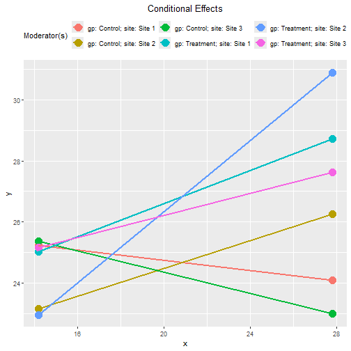
For two or more moderators, it is not easy to visualize the conditional effects if all lines are plotted on the same graph.
The argument facet_grid_cols can be used to plot the
effect of one moderator for each category of the other moderator.
This is the plot of effects for "Control" and
"Treatment":
plot(out_gp_site,
facet_grid_cols = "gp")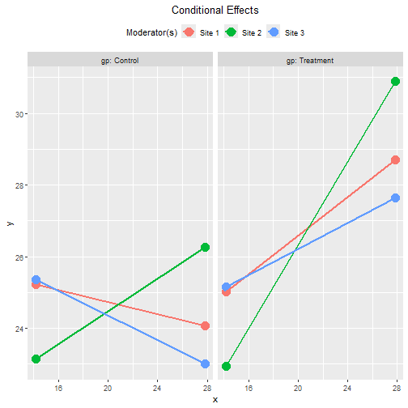
This is the plot of effects for each site:
plot(out_gp_site,
facet_grid_cols = "site")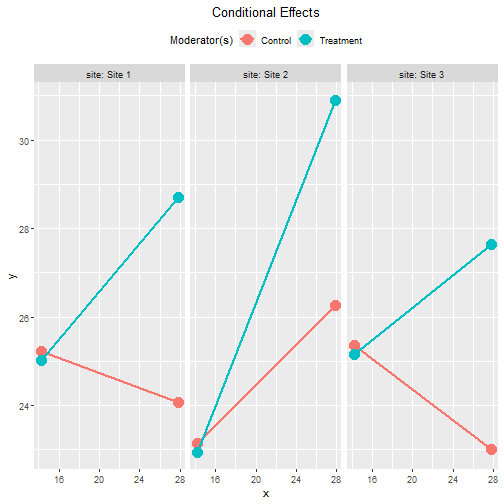
Note that, without three-way interaction, the moderating
effect of gp is the same in all three sites, and the
moderating effect of site is the same in all two
groups. The six lines are different simply because the effect of
x depends on both gp and
site. They do not denote three-way interaction
(because it is not in the regression model).
Tumble Plots
We already know the distributions of x are not the same
in all three sites. Therefore, the tumble graph is a better way to
visualize the effects:
plot(out_gp_site,
facet_grid_cols = "gp",
graph_type = "tumble")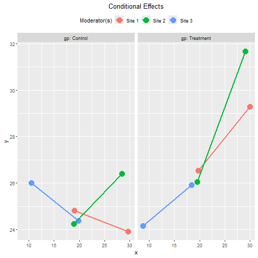
plot(out_gp_site,
facet_grid_cols = "site",
graph_type = "tumble")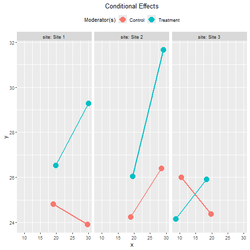
Standardized Conditional Effects
This is the output of the standardized conditional effects, with bootstrap confidence intervals:
std_gp_site <- cond_effects(
wlevels = c("gp", "site"),
x = "x",
y = "y",
fit = lm_y_gp_site,
boot_ci = TRUE,
R = 5000,
seed = 54532,
standardized_x = TRUE,
standardized_y = TRUE
)
#> 19 processes started to run bootstrapping.
std_gp_site
#>
#> == Conditional effects ==
#>
#> Path: x -> y
#> Conditional on moderator(s): gp, site
#> Moderator(s) represented by: gpTreatment, siteSite 2, siteSite 3
#>
#> [gp] [site] (gpTreatment) (siteSite 2) (siteSite 3) std CI.lo CI.hi Sig ind
#> 1 Control Site 1 0 0 0 -0.120 -0.275 0.035 -0.084
#> 2 Control Site 2 0 1 0 0.327 0.153 0.495 Sig 0.229
#> 3 Control Site 3 0 0 1 -0.247 -0.460 -0.027 Sig -0.173
#> 4 Treatment Site 1 1 0 0 0.387 0.220 0.549 Sig 0.271
#> 5 Treatment Site 2 1 1 0 0.833 0.650 1.009 Sig 0.584
#> 6 Treatment Site 3 1 0 1 0.260 0.068 0.466 Sig 0.182
#>
#> - [CI.lo to CI.hi] are 95.0% percentile confidence intervals by nonparametric bootstrapping with 5000
#> samples.
#> - std: The standardized conditional effects.
#> - ind: The unstandardized conditional effects.
#> Tumble Plots of Standardized Conditional Effects
These are the plots of the standardized conditional effects, with
facet_grid_cols set:
plot(std_gp_site,
facet_grid_cols = "gp",
graph_type = "tumble")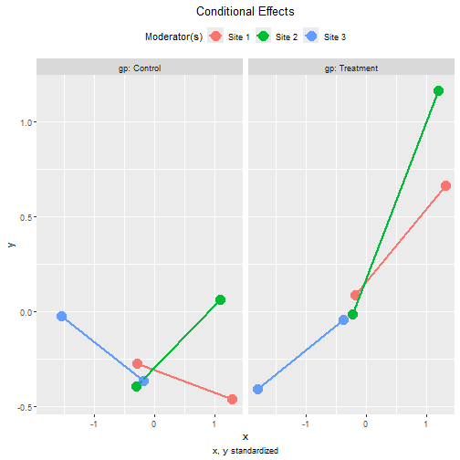
plot(std_gp_site,
facet_grid_cols = "site",
graph_type = "tumble")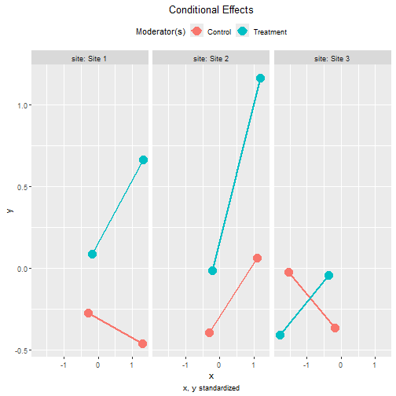
Two Categorical Moderators, with Three-Way Interaction
Suppose that we suspect that the two categorical moderators interact
with each other. That is, the group difference in the effect of
x may not be the same in all three sites, or the site
difference in the effect of x may not be the same in the
two groups.
The steps demonstrated above can also be used in this regression model:
lm_y_gp_x_site <- lm(
y ~ x*site*gp + c1 + c2,
data = dat
)The test of the difference between this model and the previous model with no three-way interaction supports that this model fits better:
anova(
lm_y_gp_site,
lm_y_gp_x_site
)
#> Analysis of Variance Table
#>
#> Model 1: y ~ gp * x + site * x + c1 + c2
#> Model 2: y ~ x * site * gp + c1 + c2
#> Res.Df RSS Df Sum of Sq F Pr(>F)
#> 1 590 9436.6
#> 2 586 9108.5 4 328.07 5.2766 0.0003516 ***
#> ---
#> Signif. codes: 0 '***' 0.001 '**' 0.01 '*' 0.05 '.' 0.1 ' ' 1These are the estimates of the regression coefficients of this model:
summary(lm_y_gp_x_site)
#>
#> Call:
#> lm(formula = y ~ x * site * gp + c1 + c2, data = dat)
#>
#> Residuals:
#> Min 1Q Median 3Q Max
#> -11.0954 -2.5367 -0.0151 2.4875 14.3118
#>
#> Coefficients:
#> Estimate Std. Error t value Pr(>|t|)
#> (Intercept) 22.077128 2.213474 9.974 < 2e-16 ***
#> x -0.128074 0.074369 -1.722 0.08557 .
#> siteSite 2 -5.276352 2.748471 -1.920 0.05538 .
#> siteSite 3 -3.063916 2.296016 -1.334 0.18258
#> gpTreatment -8.501074 2.708983 -3.138 0.00179 **
#> c1 -0.002987 0.037316 -0.080 0.93622
#> c2 0.385877 0.042952 8.984 < 2e-16 ***
#> x:siteSite 2 0.222148 0.112091 1.982 0.04796 *
#> x:siteSite 3 0.154193 0.113159 1.363 0.17352
#> x:gpTreatment 0.453702 0.107574 4.218 2.86e-05 ***
#> siteSite 2:gpTreatment -1.970235 3.954140 -0.498 0.61848
#> siteSite 3:gpTreatment 8.743721 3.254470 2.687 0.00742 **
#> x:siteSite 2:gpTreatment 0.157510 0.159449 0.988 0.32364
#> x:siteSite 3:gpTreatment -0.485461 0.160220 -3.030 0.00255 **
#> ---
#> Signif. codes: 0 '***' 0.001 '**' 0.01 '*' 0.05 '.' 0.1 ' ' 1
#>
#> Residual standard error: 3.943 on 586 degrees of freedom
#> Multiple R-squared: 0.3317, Adjusted R-squared: 0.3169
#> F-statistic: 22.38 on 13 and 586 DF, p-value: < 2.2e-16Conditional Effects
The function cond_effects() can be used in exactly the
same way, whether the moderators interact with each other or not:
out_gp_x_site <- cond_effects(
wlevels = c("site", "gp"),
x = "x",
y = "y",
fit = lm_y_gp_x_site
)
out_gp_x_site
#>
#> == Conditional effects ==
#>
#> Path: x -> y
#> Conditional on moderator(s): site, gp
#> Moderator(s) represented by: siteSite 2, siteSite 3, gpTreatment
#>
#> [site] [gp] (siteSite 2) (siteSite 3) (gpTreatment) ind SE Stat pvalue Sig CI.lo CI.hi
#> 1 Site 1 Control 0 0 0 -0.128 0.074 -1.722 0.086 -0.274 0.018
#> 2 Site 1 Treatment 0 0 1 0.326 0.078 4.190 0.000 *** 0.173 0.478
#> 3 Site 2 Control 1 0 0 0.094 0.084 1.122 0.262 -0.071 0.259
#> 4 Site 2 Treatment 1 0 1 0.705 0.083 8.543 0.000 *** 0.543 0.867
#> 5 Site 3 Control 0 1 0 0.026 0.085 0.307 0.759 -0.141 0.193
#> 6 Site 3 Treatment 0 1 1 -0.006 0.082 -0.069 0.945 -0.167 0.156
#>
#> - [SE] are regression standard errors.
#> - [Stat] are the t statistics used to test the effects.
#> - [pvalue] are p-values computed from 'Stat'.
#> - [Sig]: 0 '***' 0.001 '**' 0.01 '*' 0.05 ' ' 1.
#> - [CI.lo to CI.hi] are 95.0% confidence interval computed from regression standard errors.
#> - The 'ind' column shows the conditional effects.
#> Plotting the Conditional Effects
These are the tumble plots of the conditional effects, with
facet_grid_cols set:
plot(out_gp_x_site,
facet_grid_cols = "gp",
graph_type = "tumble")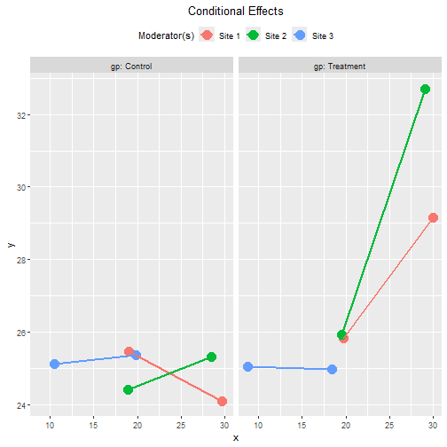
plot(out_gp_x_site,
facet_grid_cols = "site",
graph_type = "tumble")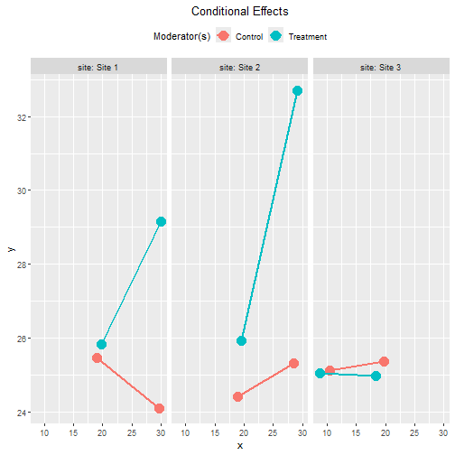
Standardized Conditional Effects
This is the output of the standardized conditional effects, with bootstrap confidence intervals:
std_gp_x_site <- cond_effects(
wlevels = c("gp", "site"),
x = "x",
y = "y",
fit = lm_y_gp_x_site,
boot_ci = TRUE,
R = 5000,
seed = 54532,
standardized_x = TRUE,
standardized_y = TRUE
)
#> 19 processes started to run bootstrapping.
std_gp_x_site
#>
#> == Conditional effects ==
#>
#> Path: x -> y
#> Conditional on moderator(s): gp, site
#> Moderator(s) represented by: gpTreatment, siteSite 2, siteSite 3
#>
#> [gp] [site] (gpTreatment) (siteSite 2) (siteSite 3) std CI.lo CI.hi Sig ind
#> 1 Control Site 1 0 0 0 -0.183 -0.374 0.003 -0.128
#> 2 Control Site 2 0 1 0 0.134 -0.045 0.298 0.094
#> 3 Control Site 3 0 0 1 0.037 -0.252 0.316 0.026
#> 4 Treatment Site 1 1 0 0 0.465 0.226 0.692 Sig 0.326
#> 5 Treatment Site 2 1 1 0 1.006 0.740 1.269 Sig 0.705
#> 6 Treatment Site 3 1 0 1 -0.008 -0.229 0.231 -0.006
#>
#> - [CI.lo to CI.hi] are 95.0% percentile confidence intervals by nonparametric bootstrapping with 5000
#> samples.
#> - std: The standardized conditional effects.
#> - ind: The unstandardized conditional effects.
#> These are the plots of the standardized conditional effects, with
facet_grid_cols set:
plot(std_gp_x_site,
facet_grid_cols = "gp",
graph_type = "tumble")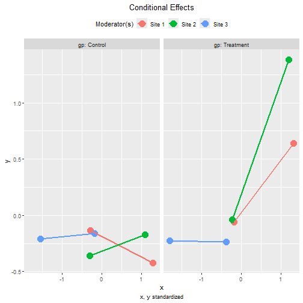
plot(std_gp_x_site,
facet_grid_cols = "site",
graph_type = "tumble")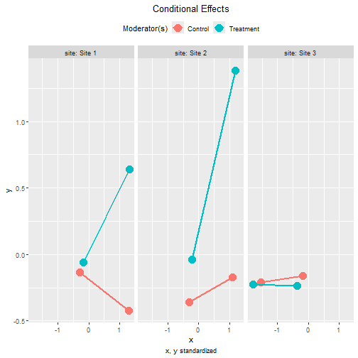
Other Moderated Regression Models
The function cond_effects() has no limit on the number
of moderators and the number of predictors with their effects
moderated.
The demonstrations of other moderated regression models can be found in the list of articles.
The levels for the moderators are controlled by
mod_levels() and related functions in the same way whether
a model is fitted by lavaan::sem() or lm().
Please refer to other articles (e.g., vignette("manymome")
and vignette("mod_levels")) on how to estimate effects in
other models analyzed by multiple regression.